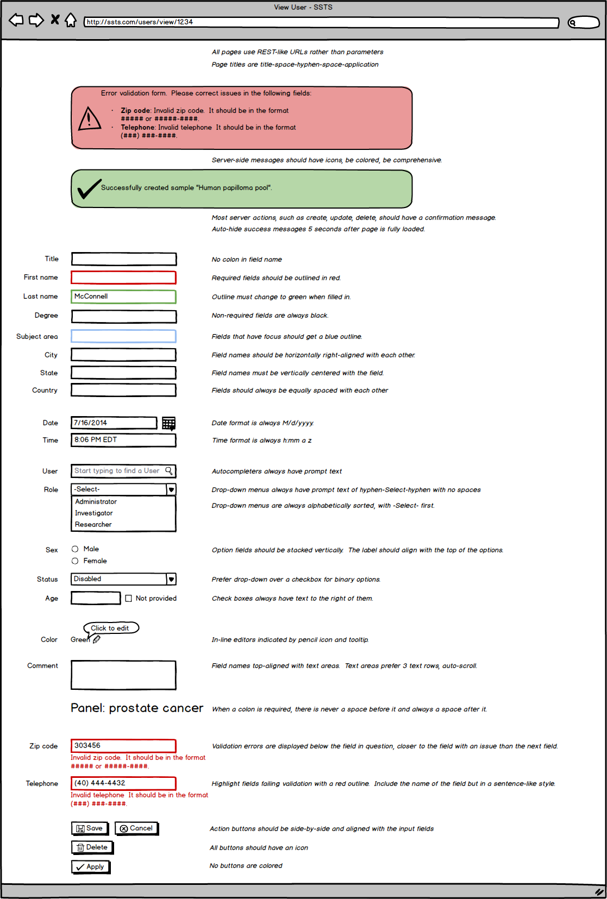

The following style guide is circulated at the beginning of every project and used as a reference throughout.
UI Style Guide

Usage of punctuation marks
Mark | Usage |
|---|---|
Period (.) |
|
| Quotation (") |
|
Question mark (?) |
|
Colon (:) |
|
Comma (,) |
|
Ellipsis (...) |
|
Apostrophes (single closing quote) |
|
Dashes |
|
Guidelines for UI text
When writing UI text for web and mobile applications, use the guidelines in the following checklist:
Ask business analyst to review all UI text.
Use clear terminology.
Avoid technical jargon and colloquialisms.
Use as few words as possible without losing the meaning.
Use one term consistently for all concepts that have the same meaning.
Avoid negative and politically sensitive terms.
When writing instructional text, present the result before the required action. For example, "To begin importing specimens, click Next."
Make sure UI command labels match labels for the UI they open.
Write informative error messages.
Error message guidelines
An error message is text that is displayed to describe a problem that has occurred that is preventing the user or the system from completing a task. The problem could result in data corruption or loss. Other message types include confirmations, warnings, and notifications. The guidelines in this topic are intended to help you write clear error messages.
Poorly written error messages can be a source of frustration for users. A well-written error message provides the following information to the user:
What happened and why?
What is the end result for the user?
What can the user do to prevent it from happening again?
The length of the text is not an issue as long as it is handled correctly. It is important that the user have all the information necessary to solve the problem. If a message has multiple audiences, you may need to provide separate text for administrators, end users, and developers.
Best Practices
The following are ways to improve your error messages:
Avoid error conditions. If you can predict that an error will occur when a user performs a specific action, rewrite your code so that the user cannot cause the error.
Write a separate error message for each known cause of the error. Do not use a single, generic message to explain every possible reason for the error unless you cannot determine the cause of the error when it occurs.
State the problem clearly and, if it will be helpful to the user, explain what caused the problem. Whenever possible, replace the generic messages from the system message-table resources with a detailed message that is specific to the problem.
Provide the user with a solution to the problem. If the solution has more than one step, refer to a help topic the explains the task in detail.
Display only the product, component, or wizard name in the title bar of the message. This helps the user determine where the problem is. Do not summarize the problem in the title bar or include the word "error".
Do not use technical jargon, use terminology that your audience understands. Do not use slang or abbreviations.
Use the appropriate command buttons, such as OK, Cancel, Yes, No, and Retry. You can use combinations of these buttons. The Yes and No buttons must always be used in combination and must always be preceded by a question.
To stop an operation and close the message box, use the Cancel button.
To close a message box, use the Close button.
To provide more information about the cause of the error, use the Details button.
To provide more information about the solution to the problem, use the Help button.
If a user action is included in the message, use the OK button to close the message box.
Yes and No buttons must be used in combination and must always be preceded by a question.
If the error is a critical error, write it to the log.
Style Considerations
Use complete but simple sentences.
Use the present tense to describe the conditions that caused the problem or a state that still exists. You can use past tense to describe a distinct event that occurred in the past.
Avoid uppercase text and exclamation points.
Do not make the user feel at fault even if the problem is the result of a user error.
Do not anthropomorphize. Do not imply that programs or hardware can think or feel.
Do not use colloquial words or phrases. Do not use terms that may be offensive in certain cultures.
Do not compound several nouns without adding a preposition or subclause to clarify the meaning. For example, "Site Server LDAP Service directory server" should be changed to "Directory server for the LDAP Service of the Site Server".
Insert descriptors before a term to clarify the meaning of the sentence. For example, "Specify InfID when Detect is set to No." should be changed to "Specify the InfID parameter when the Detect option is set to No".
Avoid the word "bad". Use more descriptive terms to tell the user what is wrong. For example, avoid messages such as "Bad size". Instead, tell the user what criteria to use when specifying a size.
Avoid the word "please". It can be interpreted to mean that a required action is optional.
Place words that are both in the index and relevant to the central meaning at the beginning of the message string.
Plurals for words should be correctly used. Please get statements reviewed with an editor before publishing them.
Example: Report is exported
Plural: Reports are exported
Content and Presentation
Use messages to report those conditions that require special consideration or affect the user’s ability to complete the action.
Avoid combining more than two or three issues in a single message. For example, if a file cannot be opened for several reasons, provide a separate message for each reason.
Put the program name in the title bar of the message box to identify the source of the message. Do not use the words warning, caution, or error in a message-box title bar.
State the problem, its probable cause (if known), and what the user can do about it, no matter how obvious the solution. Try to include enough information so that an advanced user or technical support person can quickly diagnose and solve the problem.
Correct: There is not enough disk space to save this file. Free additional space on this disk, or save the file to a different disk.
Incorrect: Insufficient disk space
Provide only as much background information as is necessary for the user to understand the message.
Avoid multi-step solutions. After a message closes, users have difficulty remembering more than two or three simple steps.
Present solution steps in the order in which they should be completed.
Correct: Delete the shipment and then delete the specimen.
Incorrect: Delete the specimen after you delete a shipment.
Replace general system-supplied messages, with your own specific messages where possible.
Use generic confirmation messages, such as "Do you want to continue...," judiciously. A more useful alternative is to describe the result of this choice.
Terminology
The terminology used in messages should be consistent with the rest of the application.
Avoid contractions in technical messages. They can slow down comprehension.
Avoid technical terms and system-oriented information, unless you are certain that your users understand them.
Avoid "please" except in situations where the user is asked to do something inconvenient or the software is to blame for the situation—for example, "Please wait while the system copies the files to your computer."
Avoid the word error, which the user could misinterpret to mean user error.
Avoid phrasing that blames the user or implies user error. Passive voice can be appropriate in messages to achieve this purpose.
Correct: The password is incorrect. Please type the correct password.
Incorrect: You typed an incorrect password.
- Do not use database style field names in error messages. For example, Status of the shipment cannot be changed from NOT_SHIPPED to READY_FOR_SHIPMENT (this is incorrect)
Capitalization and Punctuation
Use standard capitalization and punctuation in messages.
Use complete sentences with ending punctuation. For example, say "System cannot find a case with given accession number." instead of "Cannot find the case."
In the message, use sentence caps.
In the message title bar, use title caps.
{kind=link}